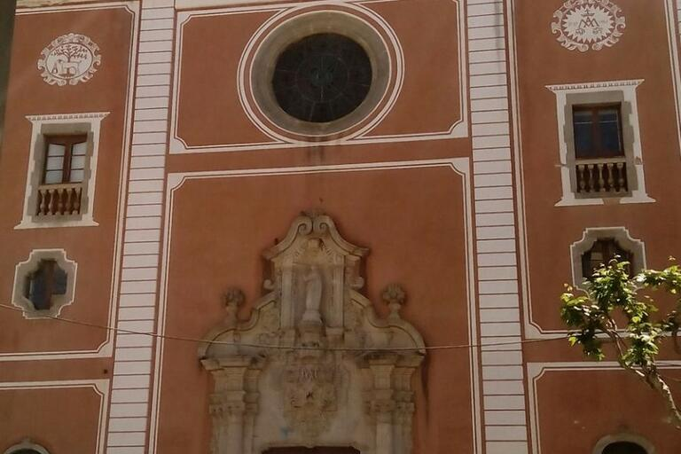

Visita · Mataró
Santa Anna de Mataró és una església d'estil barroc inclosa en l'Inventari del Patrimoni Arquitectònic de Catalunya. Formava part d'un antic col·legi enderrocat en època recent, pertanyent a la…